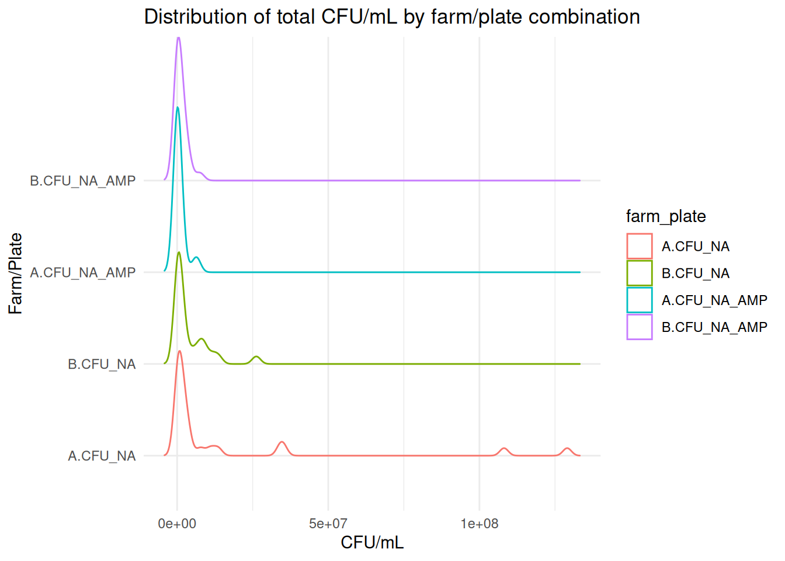
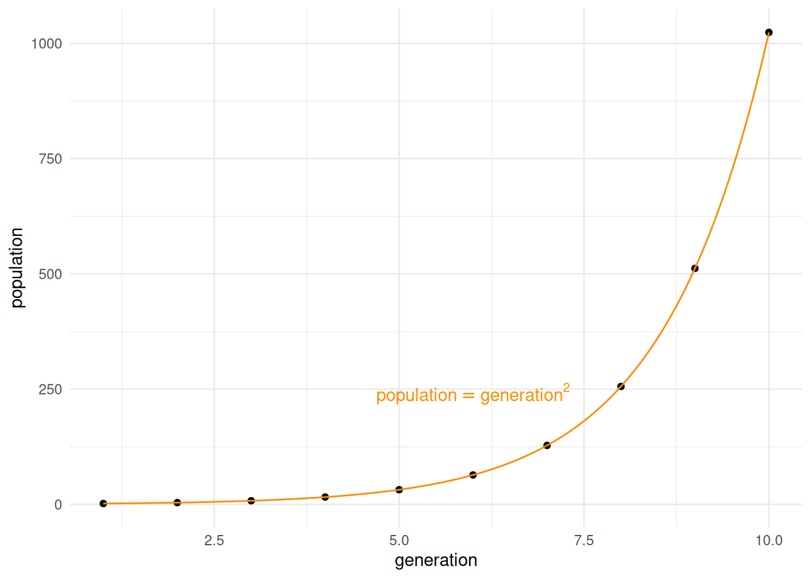
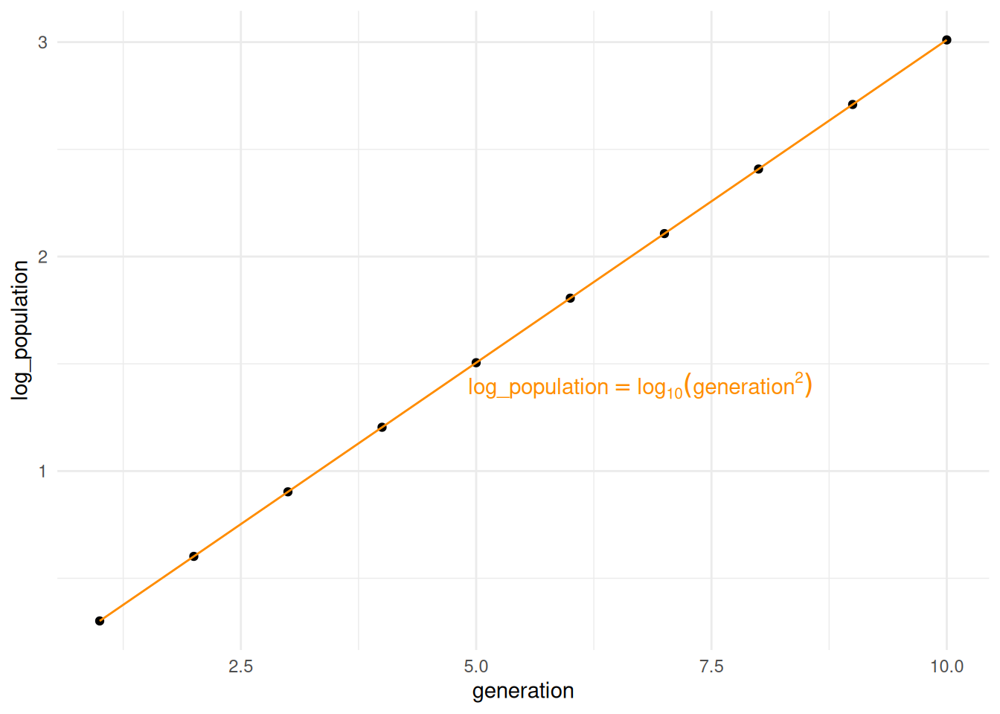
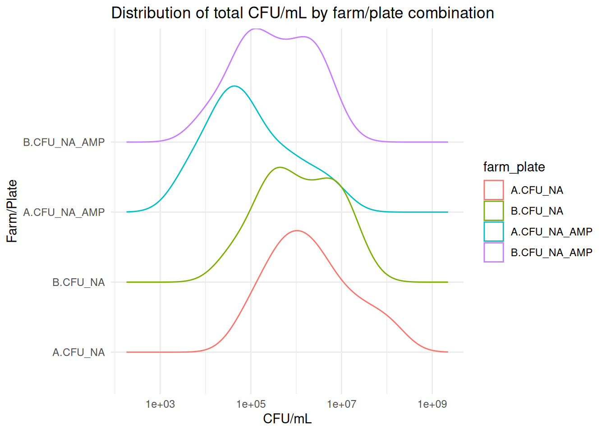
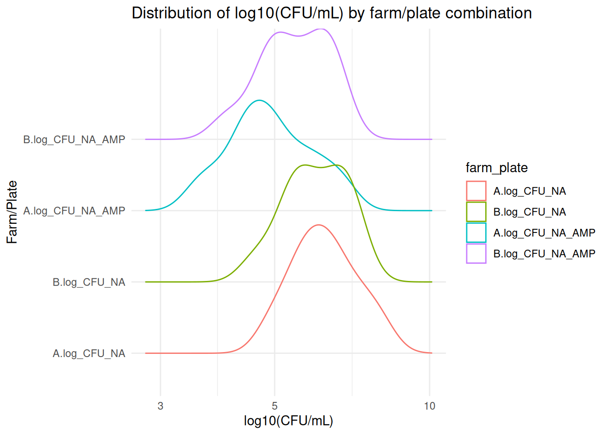

Click to see the R code
CFU_NA), and the CFU/mL obtained from the NA/Amp plate (CFU_NA_AMP).
We simulated a possible realisation of the CFU/mL-counting portion of the experiment for the BM110 microbiology laboratory, with 25 samples from each of the two farms A and B. The calculated CFU/mL are shown in Table 2.1, and can be inspected in the file farm_scenario_1.tsv.
The data in Table 2.1 should look similar to the collated data from all of the groups in the laboratory.
The values will be different, but you should have columns with sample number, farm identifier, and CFU/mL for both the NA and NA/Amp plates for each sample.
R codeCFU_NA), and the CFU/mL obtained from the NA/Amp plate (CFU_NA_AMP).
The data in Table 2.1 are structured in four columns.
sample: this is a number indicating uniquely the identity of a sample that was taken from a named farm. Each sample was plated out onto NA and NA/Amp plates.farm: this is the identifer of the farm from which the sample was taken1.CFU_NA: the calculated CFU/mL when plating the sample on an NA plate.CFU_NA_Amp: the calculated CFU/mL when plating the sample on an NA/Amp plate.The sample and farm columns are categorical variables called factors: discrete labels for the datapoints. They are also independent (or explanatory) variables in the sense that their values are static and do not depend on any other observations in the experiment.
The CFU_NA and CFU_NA_Amp columns are quantitative variables. Here we have rounded the calculations to give integer values so these are discrete variables. Because they are count data of physical things, they can only take on whole number positive values or zero. Both CFU_NA and CFU_NA_Amp are dependent variables because our understanding of the experiment and sampling is that their values vary on other observations or variables in the experimend: which sample is analysed, which farm it was sampled from, and which medium was used on the plate.
Because we have two measured CFU/mL values for each sample which differ due to the media used on the plate, we can consider these measurements to be paired data: there is an obvious and meaningful correspondence between the two values.
It is always useful to visualise a dataset prior to analysis. This can reveal relevant properties of the dataset, such as the underlying distribution of data and the presence of any potential issues that may need to be accommodated in the analysis.
In Figure 2.1 we plot the KDE (kernel density estimation) distributions of the datasets, and see that the data look to be heavily right-skewed and visibly do not seem to meet the requirements of many statistical analyses (i.e. they are not normally-distributed/do not have normally-distributed residuals).
R code# We put the dataset into a more suitable form for plotting.
# We use pivot_longer() to turn the data from wide to long format (preferable
# for some data visualisation, analysis and processing).
# We add a temporary column that labels data by combination of farm and plate,
# to make visualisation easier.
dfm_plot <- dfm |>
tidyr::pivot_longer(cols=c("CFU_NA", "CFU_NA_AMP"), # go from wide to long
names_to="plate",
values_to="cfu") |>
dplyr::mutate(farm_plate=interaction(farm, plate)) # add temporary column
# Plot the data as the density distribution of the observed CFU/mL values for
# each combination of farm and plate, with separate traces for each combination.
ggplot2::ggplot(dfm_plot, ggplot2::aes(x=cfu, y=farm_plate,
colour=farm_plate)) +
ggridges::geom_density_ridges(fill=NA) +
ggplot2::labs(title="Distribution of total CFU/mL by farm/plate combination",
y="Farm/Plate", x="CFU/mL") +
ggplot2::theme_minimal()Picking joint bandwidth of 1390000
The CFU/mL data are, however, bacterial growth data and are typically logarithmic. It is natural to present bacterial growth data on a logarithmic axis, as in Figure 2.2, due to the nature of the underlying physical/biological process.
Consider bacterial growth by cell division, starting from a single cell.
Initially, at generation 0, there is one cell. After the first generation (cell division), there are two cells. In the second generation, each of these cells divides, resulting in four cells, and so on… Supposing that there are no deaths of any cells, the population after each generation is as shown below.
| generation | population |
|---|---|
| 1 | 2 |
| 2 | 4 |
| 3 | 8 |
| 4 | 16 |
| 5 | 32 |
| 6 | 64 |
| 7 | 128 |
| 8 | 256 |
| 9 | 512 |
| 10 | 1024 |

As you can probably see in the plot above, the relationship between the two values is that the population after any generation is 2 raised to the value of that generation. At generation 4 the population size is \(2^4 = 16\), and at generation 15, the population size would be \(2^{15} = 32768\). Graphs that look like this, with a steep swoop where the slope greatly increases for higher values of x, are typical of exponential growth (this kind of relationship is pretty common in nature!).
In mathematics, we operate on variables that are related in this way using exponents (i.e. raising numbers to a power), and logarithms (the power to which another number would have to be raised to obtain a candidate number). Powers and exponents are probably quite natural to you, and the calculations below quite obvious:
\[\begin{align*} 3^2 &= 3 \times 3 = 9 \\ 4^3 &= 4 \times 4 \times 4 = 64 \end{align*}\]
But the inverse operation, which asks questions like “to what power would we need to raise 2 to give the value 512?”, or “to what power would we need to raise 10 to give the value 1,000,000?” might not be as intuitive. This question is answered using logarithms.
The question “to what power would we need to raise 3 to get the value 9?” has the answer 2. We can say this as “The logarithm of 9 to base 3 is 2.” That is, to get the value 9 you would need to raise 3 to the power 2 (i.e. \(3^2\)). We write this in mathematical shorthand as \(\log_3(9) = 2\), which can be read as “logarithm to base 3 of 9 is 2.”
NOTE: you can think of this almost as exponentials being like multiplication, and logarithms being like division (the inverse of multiplication)
It is common to choose a value for the base that is appropriate for the physical or biological process being represented when performing calculations. It is possibly more common to see base 10 (\(\log_{10}\)) used, for convenience in calculations.
One advantage of using logarithms for natural processes that are exponential, such as bacterial growth, is that taking the logarithm of (log-transforming) the data turns exponential relationships into linear relationships, as shown below. Note that we still get a linear relationship when we use \(\log_{10}\), even though \(\log_{2}\) might seem more appropriate in principle for bacterial growth, which doubles on each generation.
| generation | population | log_population |
|---|---|---|
| 1 | 2 | 0.30103 |
| 2 | 4 | 0.60206 |
| 3 | 8 | 0.90309 |
| 4 | 16 | 1.20412 |
| 5 | 32 | 1.50515 |
| 6 | 64 | 1.80618 |
| 7 | 128 | 2.10721 |
| 8 | 256 | 2.40824 |
| 9 | 512 | 2.70927 |
| 10 | 1024 | 3.01030 |

Linear relationships are much easier to handle for statistical analyses, so log transformations of data are very common when analysing exponential processes.
R codeggplot2::ggplot(dfm_plot, ggplot2::aes(x=cfu, y=farm_plate,
colour=farm_plate)) +
ggridges::geom_density_ridges(fill=NA) +
ggplot2::labs(title="Distribution of total CFU/mL by farm/plate combination",
y="Farm/Plate", x="CFU/mL") +
ggplot2::theme_minimal() +
ggplot2::scale_x_log10()Picking joint bandwidth of 0.41
Although the KDE plots in Figure 2.2 are not exact matches to normal distributions, they are much more symmetrical. Log transformation is a common approach to treating skewed data (West (2022)), and is typical when working with bacterial growth data due to the underlying exponential nature of the process (see the expanding note above).
Where it is appropriate, such as here, it is typical to take the log transformed values for statistical analysis, rather than just plot on a logarithmically-transformed axis. The transformed data is shown in Table 2.2, and is plotted on a standard x-axis in Figure 2.3.
R codeR code# Temporarily pivot the data from wide to long, for ease of use with ggplot2
dfm_plot <- dfm |>
tidyr::pivot_longer(cols=c("log_CFU_NA", "log_CFU_NA_AMP"),
names_to="plate",
values_to="log_cfu") |>
dplyr::mutate(farm_plate=interaction(farm, plate)) # add farm/plate interaction categories
ggplot2::ggplot(dfm_plot, ggplot2::aes(x=log_cfu, y=farm_plate,
colour=farm_plate)) +
ggridges::geom_density_ridges(fill=NA) +
ggplot2::labs(title="Distribution of log10(CFU/mL) by farm/plate combination",
y="Farm/Plate", x="log10(CFU/mL)") +
ggplot2::theme_minimal() +
ggplot2::scale_x_log10()Picking joint bandwidth of 0.0317
The plot in Figure 2.3 strongly resembles that in Figure 2.2 (other than the x-axis labels), because it is the same mathematical operation. We can now work directly with the log-transformed values in log_CFU_NA and log_CFU_NA_AMP, as they meet the assumptions of standard statistical tests more closely.
In a blinded experiment, we may not know which farm a sample was taken from. Here, because we specifically want to compare results between farms, the identity of each farm is provided.↩︎